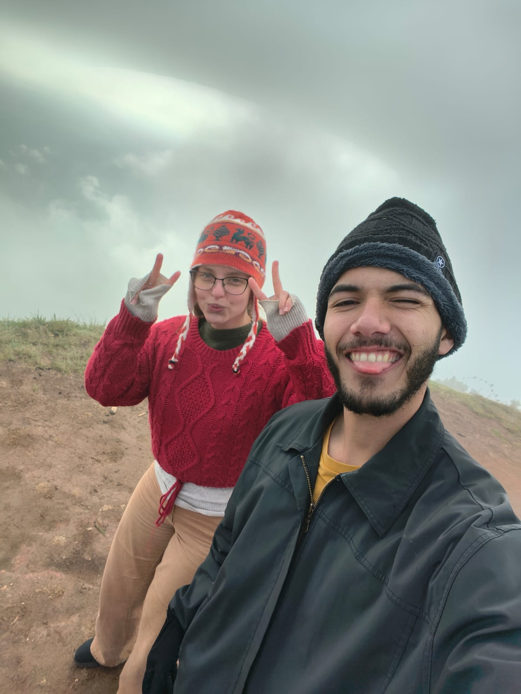

NOSSA HISTÓRIA
Dois capacetes,
uma só aventura.
Cada destino planejado pode se transformar em uma memória com data, relato, quilometragem, avaliação e registro fotográfico.
- 01Escolher o próximo destino
- 02Viver o caminho sem pressa
- 03Guardar a memória juntos